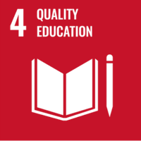
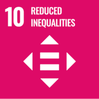
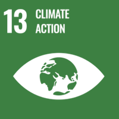
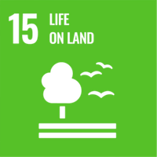
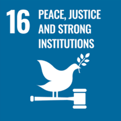
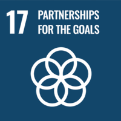

The International Conference on Interdisciplinary Approaches to Environment, Ecosystems & Sustainable Development (ICIAEESD) convened in Puducherry as a collaborative effort among esteemed institutions — bringing together academics, policymakers and practitioners to advance sustainable development from interdisciplinary perspectives.
The conference was organised as a joint initiative of the Legal Services Clinic (an NALSA initiative at Pondicherry University and KMGIPGSR), Pondicherry University, KMGIPGSR, and APSCC — a partner of the UN Decade on Biodiversity. Together they created a platform to promote innovative solutions and foster collaboration across academia, practice and policy.
A platform for interdisciplinary collaboration
ICIAEESD 2020 aimed to promote innovative solutions and foster collaboration among academics, practitioners and policymakers, examining sustainable development through interdisciplinary lenses. The conference was explicitly aligned with the United Nations Sustainable Development Goals, reinforcing the idea that today’s environmental challenges cannot be solved from a single discipline in isolation.
Key themes
Deliberations were organised around four thematic pillars that spanned law, culture, international governance and the SDGs:
Highlights
The conference featured multi-disciplinary participation, knowledge sharing and networking, and the showcasing of best practices in sustainability. Selected contributions were also offered publication opportunities with reputed publishers, extending the reach of the ideas beyond the event itself.
Aligned with the SDGs
ICIAEESD 2020 advanced the following Sustainable Development Goals — connecting quality education, reduced inequalities, climate action, life on land, strong institutions and global partnerships:






Interdisciplinary approaches are essential to solving today’s environmental challenges — bringing law, culture, science and policy into a shared conversation for a sustainable future.
Event: International Conference on Interdisciplinary Approaches to Environment, Ecosystems & Sustainable Development (ICIAEESD), Puducherry · January 2020.